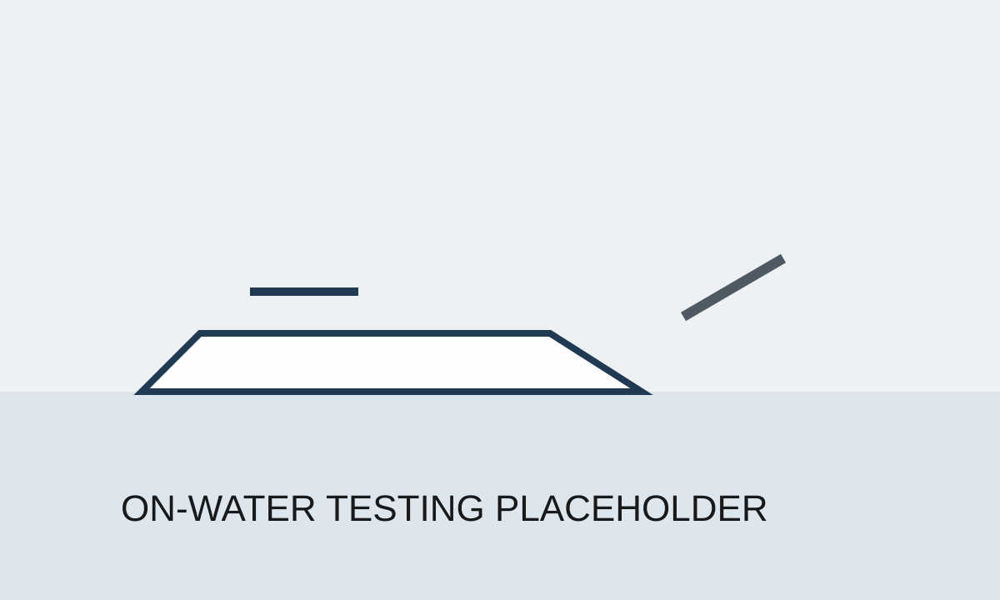

01
Motor Stator Potting Process Development
Built an internal vacuum potting process for high-power stators when process guidance was limited and endurance testing needed prototype-capable hardware quickly.
Mechanical Engineering Portfolio
Mechanical Engineer - Build, Manufacturing, and Integrated Hardware Systems
I design, build, and test mechanical systems for electric propulsion and marine environments.
Mechanical engineer with hands-on experience developing manufacturing processes, tooling, drivetrain systems, and validation methods for electric propulsion hardware. I've built internal prototype capability, owned ambiguous hardware problems, and driven improvements in performance, manufacturability, reliability, and cost.
Selected Work
Case studies focused on manufacturing, propulsion, and marine hardware validation.
01
Built an internal vacuum potting process for high-power stators when process guidance was limited and endurance testing needed prototype-capable hardware quickly.

02
Reworked load paths, shafts, bearings, and assembly architecture to unlock higher torque capacity without major tooling changes.

03
Built a repeatable test-and-analysis workflow that enabled selection of a new propeller with approximately 13% higher efficiency.

04
Designed a structured validation program to compare marine coating systems against durability, manufacturability, and cost constraints.
Additional Work
Additional prototype and systems work, shown as a compact visual list of supporting engineering projects.
Resume
The HTML resume is optimized for quick scanning. The PDF link uses the same path GitHub Pages will serve once you upload the site.
Contact
Available for engineering roles focused on hardware, manufacturing, and integrated systems.